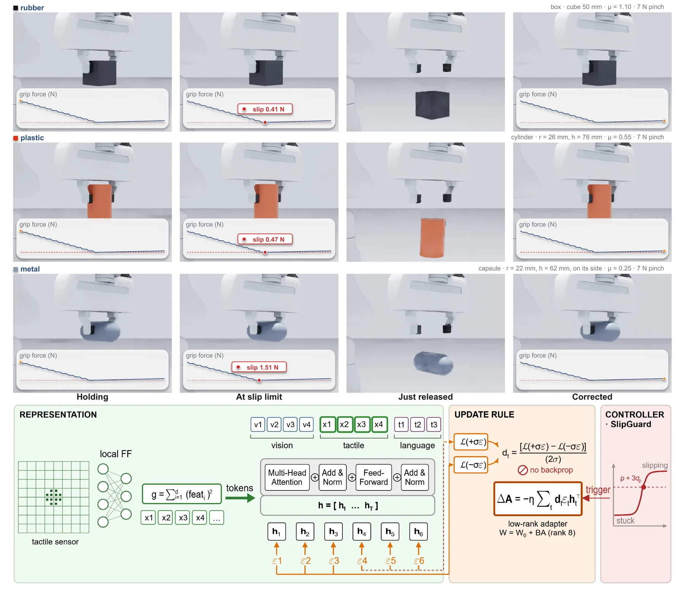
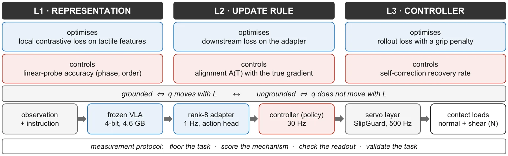
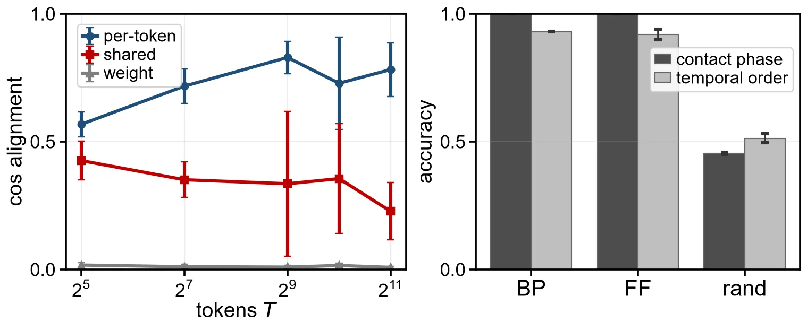
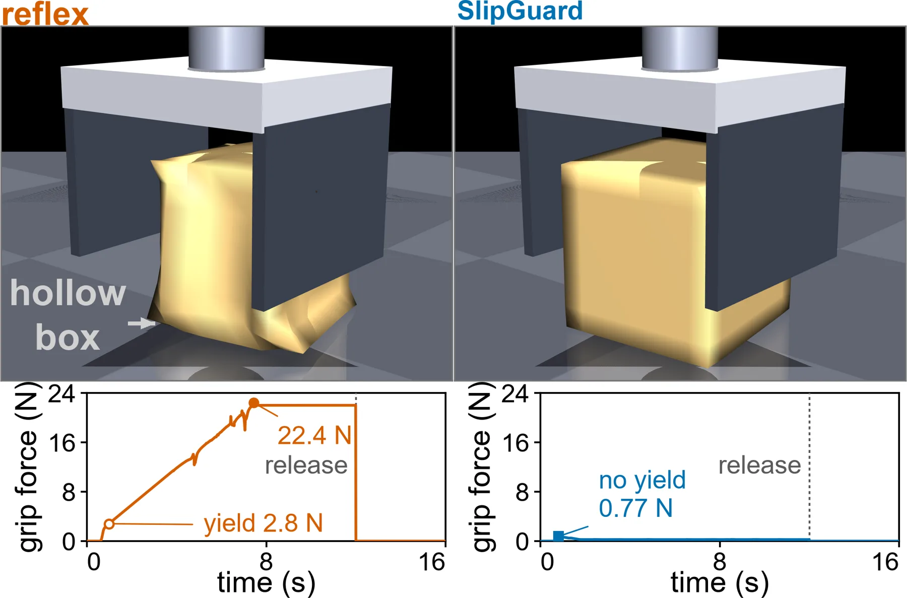
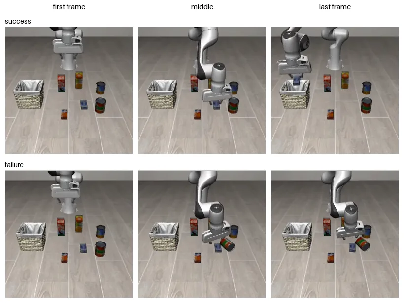

FORTH：把触觉 VLA 的「代理指标」和「物理可控量」逐层配对
FORTH: Grounding Tactile VLA Execution via Forward-Only Proxy-Control Pairing
一句话：不要再用「损失降了」当「力控对了」的证据——给每一层配一个可测的物理量，再用只前向的更新和一类门控把它闭环。
success rate
memory ratio
grip force
recovery
作者、单位与技术谱系 · Research context
作者与单位
研究脉络
- Forward-Forward 算法（Hinton, 2022）方法基座关系：提供层内局部 goodness 目标，本文用它构造不反传的触觉主干。[FORTH 原文 §4.1、图 3]
- TactileReflex（视觉–触觉反射控制）方法上游关系：提供单调整反射斜坡这一强基线，本文用有界门控修正与之对照。[FORTH 原文 §6.2、Table 2]
- 零阶/无梯度适配（MeZO 系与 FF-INT8 等）方法上游关系：提供 token 并行有限差分更新思路，本文把它限定在动作头的 rank-8 适配器上。[FORTH 原文 §5.1、§5.3]
合作网络
- University of Macau（单一署名单位）University of Macau → FORTH 全体七位作者关系：共同署名（同一单位）[arXiv 摘要页]
- FORTH → LIBERO / OpenVLA 系骨干FORTH → LIBERO 基准与 4-bit VLA 骨干关系：技术依赖（评测与骨干）[FORTH 原文 Table 4]
- FORTH → 公开代码FORTH → github.com/Jordanlllll/FORTH关系：官方代码发布[arXiv 摘要页（含代码链接）]
作者与单位取自论文首页标注（单一单位澳门大学）；Forward-Forward、TactileReflex 与零阶适配的技术接续取自正文显式引用；末位作者是否通讯未在论文中标注，条目中已写明仅为署名位置记录，未推断师生关系。
方法本质拆解 · What actually changed
是不是微调？
不是常规微调：视觉–语言骨干全程冻结（4-bit、4.6 GB），只训练动作头上的 rank-8 适配器，且更新用零阶有限差分而不是反传；触觉主干则是层内 Forward-Forward 局部目标训练的独立模块，阈值固定为 2.0。
有没有额外约束？
约束分两类：表示层用局部 goodness 阈值把「真实接触」与「反事实/合成接触」分开；控制层用正常轨迹的 ρ̄+3σ_ρ 作为一类判决边界，并加两步去抖、修正量上限 ΔF_max 与固定方向，保证闭环不会自己把力推爆。
推理/后端到底做了什么？
推理是三层异步闭环：500 Hz 触觉伺服给出剪切/法向比，1 Hz 适配器做一次前向零阶更新，30 Hz 策略输出动作；SlipGuard 只在门控触发时把法向力指令做有界抬升。没有反向传播、没有二次优化、也没有离线重规划。
方法本质是什么？
本质是把「代理损失最小」替换成「代理损失与物理可控量同向变化」这一可检验条件，并在每一层用最便宜的方式满足它：表示层用局部 goodness 保住接触几何，更新层用零阶估计绕过反传，控制层用一类统计量把「滑移」这个物理事件变成可触发信号。它改变的是触觉反馈能否在低成本硬件上闭环这一不确定性。
输入是冻结 VLA 的激活、触觉帧与剪切/法向力，表示层用局部 goodness 保住接触几何，更新层零阶改 rank-8 适配器，控制层按一类阈值抬力，直接得到不损坏物体的力闭环。

桥接价值Bridge
桥接价值
这篇桥接的是「学习模块的指标」和「系统真正控制的物理量」：它不提出更强的策略，而是给每一层配一个可测观测量，并要求两者的变化方向一致。这对我们做可靠状态估计很直接——我们天天用残差、卡方、内点率当作「估计好不好」的代理，但很少验证这些代理和真正的误差（位姿误差、尺度误差）是否同向。它的 SlipGuard 也是一个可借用的模式：只用正常数据标定阈值的一类检测器，正好对应我们的故障/退化检测场景。
方法与模块Method
方法摘要
系统按部署栈分三层。表示层是两层 Forward-Forward 块组成的冻结层内主干：48 个 patch、d=128，用局部 goodness（去均值后平方和）做判别，阈值固定 2.0，只有标量 goodness 跨层传递，因此不需要端到端反传。更新层是 token 并行的零阶适配：对适配器参数加对称噪声做有限差分，把方向导数与噪声外积累加成梯度估计，更新只落在动作头上的 rank-8 适配器，骨干全冻。控制层是 SlipGuard：以剪切/法向比 ρ 为统计量，阈值取正常轨迹的 ρ̄+3σ_ρ，经两步去抖后按比例有界抬升法向力。整体跑在 500 Hz 伺服、1 Hz 适配器、30 Hz 策略的节拍上，只额外加一路 48×64 触觉帧。
可迁移模块
第一是一类阈值 + 去抖的检测器设计：标定只用无故障的正常片段（τ=ρ̄+3σ_ρ），不需要故障样本，这对我们收集不到真实故障的数据集非常友好。第二是符号一致性检验：比较目标函数的扰动方向与物理量的扰动方向是否同号，这可以作为一个通用验收测试，用来判断我们某个学习型不确定性输出是否真的跟误差同向。第三是「有界修正」的控制律：修正量被 ΔF_max 截断、方向由平台固定，避免闭环自己去放大误差——我们的后端里对异常观测做鲁棒核降权时，同样需要这种有界性。

证据Evidence
关键证据与数字
LIBERO 三个套件（Goal 未计入）上 FORTH 为 99.3 / 98.6 / 94.8，平均 97.6%，对照 OpenVLA-OFT 96.8、MemoryVLA 96.7、π0 93.6。效率上单次 7B 适配：前向 58.8 ms、28.9 J、峰值激活 334 MB，反传 117.5 ms、57.2 J、2381 MB，即延迟与能耗约 2 倍、显存 7.12 倍。控制侧：弹塑性结构壳上 SlipGuard 峰值 0.77 N、残差 0.01 mm，反射斜坡 22.43 N、残余 10.62 mm（29 倍力差）；4×4 扰动网格 160/160 恢复，对照恒定力 68/160（42.5%）、给定真值质量与摩擦的 oracle 145/160（90.6%），且 SlipGuard 零损伤而恒定力损伤 22 例、oracle 12 例；换成实测传感器后 12/12 恢复，对照离散门 1/12、被动 0/12（Holm p=0.0024/0.0039）。
边界与下一步Limits & Next Step
边界与风险
作者明确承认阈值是经验标定而非物理推导，会随传感器偏置漂移：真实记录上起始误报率为力级统计量 0.024、比值统计量 0.031。硬件前提也写得很清楚：需要一对剪切/法向传感器按控制频率采样、一组无故障标定片段、以及一个策略无法抬高的闭环力上限。我们的待核实项：LIBERO 与结构壳都是仿真，真实机器人上长时间漂移与温度效应没有数据；只验证了一个 4-bit、4.6 GB 的骨干，换模型是否仍成立未知；三根支柱（FF 表示、零阶更新、门控）各自都有单独证据，但耦合后的贡献没有做完整因子消融，「97.6% 里有多少来自触觉、多少来自适配器」无法分离；损伤结论依赖 N_crush=F_req 这一约定，换了阈值结论会变。
下一步实验
最小实验一：在我们已有的传感器故障注入数据上，复现「只用正常段标定 τ=mean+3σ」的一类门控，与残差卡方检验对比检出延迟、误报率和恢复行为，看它是否在 GNSS 多路径或视觉退化场景同样有效。最小实验二：把符号一致性检验搬到我们的学习型先验（例如学习到的深度/不确定性输出）上，人为扰动输入并检查「代理指标变化方向」与「真实误差变化方向」是否同号，若不同号则说明该模块不能用于在线决策。





